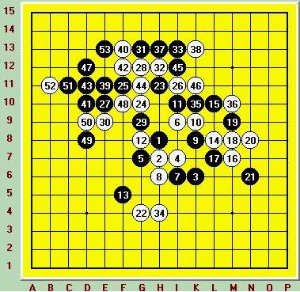

这是我在天津团体邀请赛上和上海棋手朱建峰的一盘棋。我是第一次参加现实中的五子棋比赛，所以无论对手是谁我都没有什么压力，有压力的应该是对手。
本轮比赛我执黑，开出比赛中最常见的疏星局，白棋没有选择交换，豪不犹豫走了唯一的白4，这是强烈自信的表现，把选择黑5主动权交给了我。黑5我的两打是K7和G7，这里我耍了一个小聪明，会下疏星的人都知道G7之后的变化肯定要强于K7。我故意先放K7停顿了几秒再走G7，给对方一个心理暗示。
果然如我所愿，他留了K7。5到11是定试没什么说的，12到21是自由争夺，感觉白棋这几手白棋下的不太好，虽然白棋消化了黑棋在右面的连接同时形成一定棋势，但是不足以对黑棋构成威胁，反而被黑棋占领外势。 22是白棋对黑棋左下角优势的最强防守，我见G4要点被占做不出什么东西了，23转攻上面，24的防守让我有点以外，感觉黑棋上面有进攻的机会了，我考虑了H12等几个进攻点。但是都没有把握杀死白棋，顾及到朱很强的计算能力，我最终选择了保守的下法，作为保守的代价25到30之后黑棋的优势消失。
31是缓手，只为了保留上面的优势，此时我已经做好防守白棋的准备。32，33很有意思，本来白棋是想限制黑棋，但却让黑棋形成了一个很隐蔽的先手。这是时朱建峰轻敌了，也许他是太想赢下我，34下出败招，37双头蛇之后，白棋的防守只是形式上的了。
